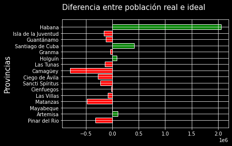

por Daniel Orlando Ortiz Pacheco y una computadora 😅
Según el Anuario Estadístico de Cuba, en su edición de 2020, Cuba cuenta
con una extensión territorial de 109 884.01 m² y suma 11 181 595 de
persona en su población total. Por lo que al realizar una simple
división se puede resumir que
Provincias de Cuba
Pinar del Rio
≈ 12.2
≈ 3.6
Artemisa
≈ 5.5
≈ 4.1
Mayabeque
≈ 5.1
≈ 5.5
Matanzas
≈ 16.1
≈ 3.6
Las Villas
≈ 11.5
≈ 2.7
Cienfuegos
≈ 5.7
≈ 5.2
Sancti Spíritus
≈ 9.3
≈ 4.6
Ciego de Ávila
≈ 9.6
≈ 4.9
Camagüey
≈ 21.1
≈ 2.8
Las Tunas
≈ 9.0
≈ 4.0
Holguín
≈ 12.6
≈ 2.1
Granma
≈ 11.5
≈ 2.6
Santiago de Cuba
≈ 8.5
≈ 2.0
Guantánamo
≈ 8.5
≈ 2.0
Isla de la Juventud
≈ 3.3
≈ 25.4
Analizando los datos territoriales del documento resaltan los números
plasmados para la Habana y la comparación con el resto de la provincias
de la isla. La Habana no solo es la capital del país, sino también es la
provincia más pequeña, con 728.26 km² de superficie, y la más
poblada, con un total de 2 132 183 residentes en la provincia. Datos que
siguiendo el razonamiento anteriormente expuesto nos llevan a concluir
que a cada "habanero" de corresponde
. Números tan sorprendentes inevitablemente ponen el foco de atención
en el resto de la provincias, y su comparación con la capital. Lo que da
pasos a otra serie de verdades muy impactantes, pues mientras que una
provincia como La Isla de la Juventud (segunda provincia más pequeña) es
solo
que La Habana y tiene
población que esta , presentando una proporción bastante razonable
(territorio/ población). Las provincias más grandes de la isla, como
Camagüey, Matanzas y Holguín, cada una de ellas tiene una extension
mucho mayor que la de
y sin embargo ninguna tiene una población mayor que la
de la población capitalina
Una vez que se supera estas desproporciones, caemos en que conociendo
que porciento del territorio nacional de corresponde a cada uno de los
residentes y la dimensiones superficiales aportadas por el anuario de
cada provincia, entonces se podría calcular cual seria la cantidad de
personas que debiera residir en cada una de las mismas para que la
distribución territorio/población fuera equilibrada. Restando este
computo a la cantidad de personas contabilizadas en cada una de las
localidades se ve que tan lejos están las mismas de su "número ideal" de
población. Yyyyyy!!!! Sorprendentemente
se encuentra por encima de dicho número, con lo cual la Habana no es la
única provincia "super" poblada de Cuba. Yyyyyyy!!!! Aun más
sorprendente

Y por supuesto, en el gráfico inicial, no incluimos a la Habana para
apreciar más detalles de la misma, pues la
rompe todas las métricas posibles si de densidad de población se habla.